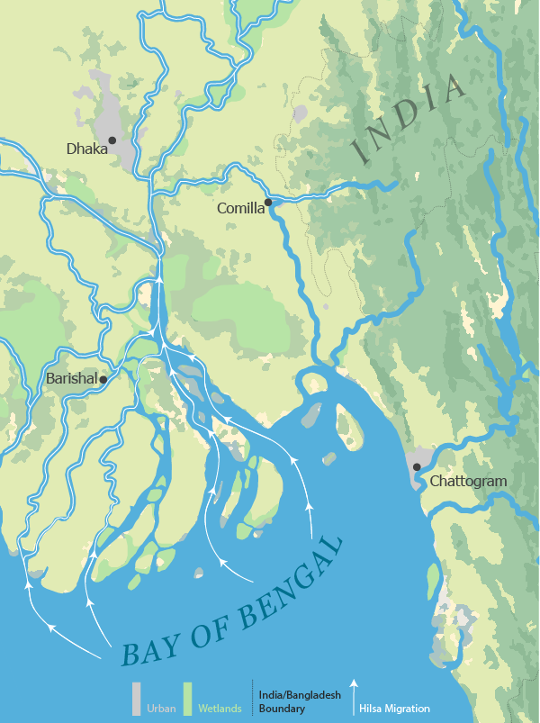

The Monsoon Migration of Hilsa in Bangladesh
Claire Keef
The migration of Hilsa is a seasonal movement that links marine, estuarine, and freshwater environments in the northern Bay of Bengal and Meghna River system. This map shows the spatial progression of hilsa, a fish local to the Bay of Bengal, migrating from marine feeding grounds to river spawning and nursery areas. This migration is influenced by various human and environmental factors along the route.

The northern Bay of Bengal serves as the primary marine feeding ground for hilsa. Monsoon-associated (seasonal wind-driven rains that increase river discharge) sediment discharge and nutrients drive a high primary productivity in these waters. During this phase, hilsa accumulate energy from lipids that are essential for long-distance migration and reproduction.

The northern Bay of Bengal serves as the primary marine feeding ground for hilsa. Monsoon-associated (seasonal wind-driven rains that increase river discharge) sediment discharge and nutrients drive a high primary productivity in these waters. During this phase, hilsa accumulate energy from lipids that are essential for long-distance migration and reproduction.